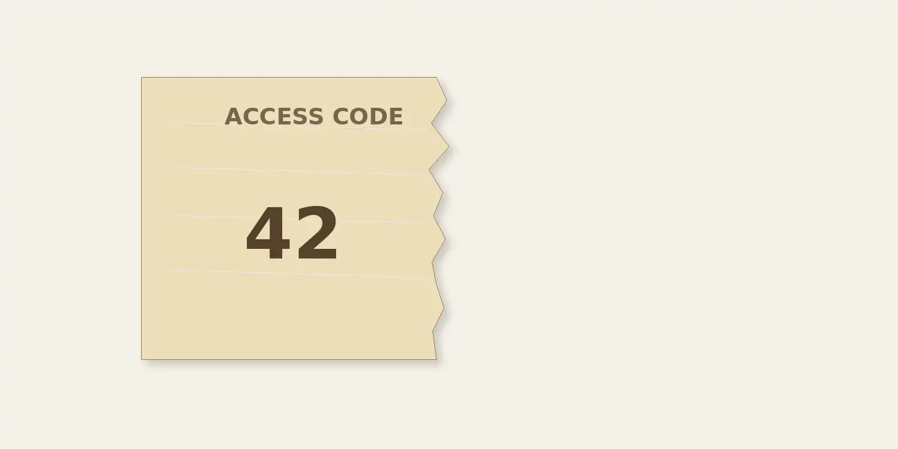
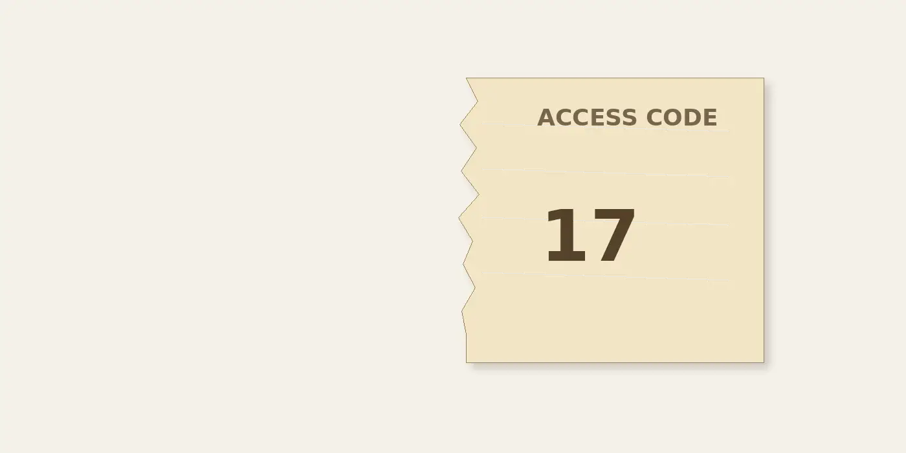

Room 1
Emergency Ward
Investigate a recorded response to a student proposal.
AvailableAn abandoned hospital holds a dangerous secret. Misleading public speeches have triggered panic, and the emergency system is locked. Investigate the hospital, diagnose faulty reasoning and find your way out.
You are trapped inside an abandoned hospital. Identify logical fallacies hidden in public speeches to recover two missing document fragments and unlock the operating theatre.
Timer: The countdown starts when you enter the Map. If it reaches zero, the game ends.
Life points: Each incorrect submission costs 10 points. If your life points reach zero, the game ends.
Hints: Optional hints are available in each room and do not deduct life points. Sound is optional; all important messages also appear on screen.
Accessibility: use Tab to move between controls, Space or Enter to activate buttons, and read the feedback announced after each answer. The game supports reduced-motion preferences.
Rooms 1 and 2 can be completed in either order. The operating theatre stays locked until both fragments are collected and the access code is entered.
Investigate a recorded response to a student proposal.
AvailableExamine a speech supporting a controversial policy.
AvailableThe final diagnostic challenge awaits.
🔒 LockedBoth pieces have been recovered. Place them together to read the access code.


Accessible clue: Fragment 1 reads 42. Fragment 2 reads 17. Read the fragments in that order to form the four-digit access code.
You enter the emergency ward. A recorded announcement is playing repeatedly over the hospital speakers. The recording contains a suspicious statement made by the hospital's former director. Identify the faulty reasoning to access the emergency exit.
You discover an old recording stored in the medical records room. The recording contains a persuasive speech encouraging hospital staff to support a controversial decision. Two different types of fallacies are hidden in the speech.
You have successfully unlocked the operating theatre using the four-digit code. Inside, you discover the hospital's final recording. The former director has left behind a speech containing several misleading arguments. Complete the final diagnosis to escape.
You have recovered a missing piece of the confidential report.
Congratulations! You have successfully identified the misleading arguments and restored the hospital's emergency communication system.
Your investigation has ended.
You can restart the escape room and try again.